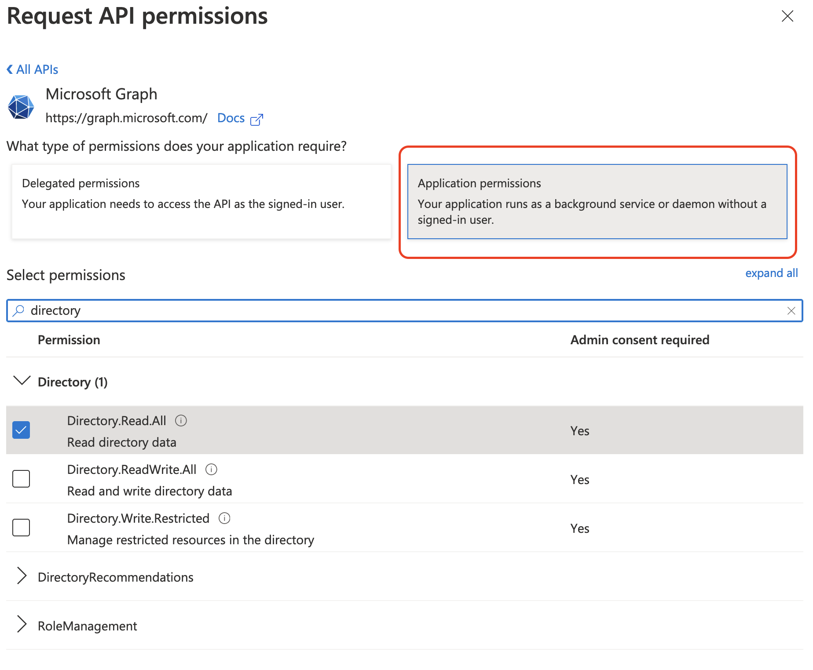
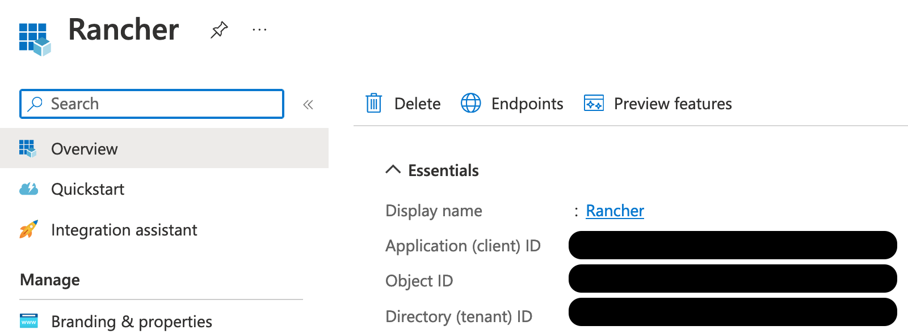
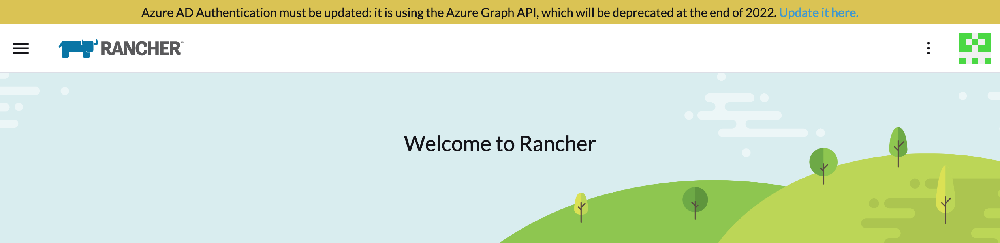
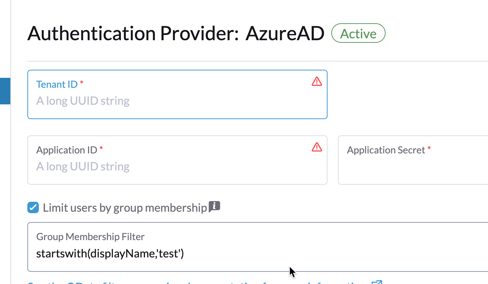

|
Dieses Dokument wurde mithilfe automatisierter maschineller Übersetzungstechnologie übersetzt. Wir bemühen uns um korrekte Übersetzungen, übernehmen jedoch keine Gewähr für die Vollständigkeit, Richtigkeit oder Zuverlässigkeit der übersetzten Inhalte. Im Falle von Abweichungen ist die englische Originalversion maßgebend und stellt den verbindlichen Text dar. |
Azure AD konfigurieren
Microsoft Graph API
Die Microsoft Graph API ist jetzt der Weg, über den Sie Azure AD einrichten werden. Die folgenden Abschnitte unterstützen neue Benutzer bei der Konfiguration von Azure AD mit einer neuen Instanz und helfen bestehenden Azure-App-Besitzern bei der Migration zum neuen Ablauf.
Der Microsoft Graph API-Ablauf in Rancher entwickelt sich ständig weiter. Wir empfehlen, dass Sie die neueste gepatchte Version von 2.7 verwenden, da sie sich noch in aktiver Entwicklung befindet und weiterhin neue Funktionen und Verbesserungen erhalten wird.
Einrichtung neuer Benutzer
Wenn Sie eine Instanz von Active Directory (AD) in Azure gehostet haben, können Sie Rancher so konfigurieren, dass Ihre Benutzer sich mit ihren AD-Konten anmelden können. Die Konfiguration der externen Authentifizierung von Azure AD erfordert, dass Sie in Azure sowie in Rancher entsprechende Einstellungen vornehmen.
|
Anmerkungen
|
Umriss der Azure Active Directory-Konfiguration
Die Konfiguration von Rancher, um Ihren Benutzern die Authentifizierung mit ihren Azure AD-Konten zu ermöglichen, umfasst mehrere Verfahren. Überprüfen Sie den untenstehenden Umriss, bevor Sie beginnen.
|
Bevor Sie beginnen, öffnen Sie zwei Browser-Tabs: einen für Rancher und einen für das Azure-Portal. Dies erleichtert das Kopieren und Einfügen von Konfigurationswerten vom Portal zu Rancher. |
1. Registrieren Sie Rancher bei Azure
Bevor Sie Azure AD in Rancher aktivieren, müssen Sie Rancher bei Azure registrieren.
-
Melden Sie sich als administrativer Benutzer bei Microsoft Azure an. Die Konfiguration in den folgenden Schritten erfordert administrative Zugriffsrechte.
-
Verwenden Sie die Suche, um den Dienst App-Registrierungen zu öffnen.
-
Klicken Sie auf Neue Registrierung und füllen Sie das Formular aus.

-
Geben Sie einen Namen ein (etwas wie
Rancher). -
Wählen Sie aus Unterstützte Kontotypen "Konten in diesem organisatorischen Verzeichnis nur (AzureADTest nur - Einzelmieter)". Dies entspricht den Optionen der alten App-Registrierung.
Im aktualisierten Azure-Portal sind Weiterleitungs-URIs gleichbedeutend mit Antwort-URLs. Um Azure AD mit Rancher zu verwenden, müssen Sie Rancher bei Azure auf die Whitelist setzen (früher über Antwort-URLs). Daher müssen Sie sicherstellen, dass Sie die Weiterleitungs-URI mit der URL Ihres Rancher-Servers ausfüllen, um den unten aufgeführten Verifizierungspfad einzuschließen.
-
Stellen Sie im Abschnitt Weiterleitungs-URI sicher, dass Web aus dem Dropdown-Menü ausgewählt ist, und geben Sie die URL Ihres Rancher-Servers in das Textfeld neben dem Dropdown-Menü ein. Diese Rancher-Server-URL sollte mit dem Verifizierungspfad ergänzt werden:
<MY_RANCHER_URL>/verify-auth-azure.Sie finden Ihre personalisierte Azure-Weiterleitungs-URI (Antwort-URL) in Rancher auf der Azure AD-Authentifizierungsseite (Globale Ansicht > Authentifizierung > Web).
-
Klicken Sie auf Registrieren.
-
|
Es kann bis zu fünf Minuten dauern, bis diese Änderung wirksam wird, also seien Sie nicht alarmiert, wenn Sie sich nicht sofort nach der Azure AD-Konfiguration authentifizieren können. |
2. Erstellen Sie ein neues Client-Geheimnis
Erstellen Sie ein Client-Geheimnis im Azure-Portal. Rancher wird diesen Schlüssel verwenden, um sich bei Azure AD zu authentifizieren.
-
Verwenden Sie die Suche, um die App-Registrierungen Dienste zu öffnen. Öffnen Sie dann den Eintrag für Rancher, den Sie im letzten Verfahren erstellt haben.

-
Klicken Sie im Navigationsbereich auf Zertifikate & Geheimnisse.
-
Klicken Sie auf Neues Client-Geheimnis.

-
Geben Sie eine Beschreibung ein (etwas wie
Rancher). -
Wählen Sie die Dauer aus den Optionen unter Läuft ab aus. Dieses Dropdown-Menü legt das Ablaufdatum für den Schlüssel fest. Kürzere Zeiträume sind sicherer, erfordern jedoch, dass Sie häufiger einen neuen Schlüssel erstellen. Beachten Sie, dass Benutzer sich nicht bei Rancher anmelden können, wenn festgestellt wird, dass das Anwendungsgeheimnis abgelaufen ist. Um dieses Problem zu vermeiden, rotieren Sie das Geheimnis in Azure und aktualisieren Sie es in Rancher, bevor es abläuft.
-
Klicken Sie auf Hinzufügen (Sie müssen keinen Wert eingeben--, da er nach dem Speichern automatisch ausgefüllt wird).
-
Sie werden diesen Schlüssel später in der Rancher-Benutzeroberfläche als Ihr Anwendungsgeheimnis eingeben. Da Sie den Schlüsselwert später nicht mehr in der Azure-Benutzeroberfläche abrufen können, halten Sie dieses Fenster während des gesamten Einrichtungsprozesses geöffnet.
3. Setzen Sie die erforderlichen Berechtigungen für Rancher
Als Nächstes setzen Sie die API-Berechtigungen für Rancher in Azure.
|
Stellen Sie sicher, dass Sie Anwendungsberechtigungen und nicht delegierte Berechtigungen festlegen. Andernfalls können Sie sich nicht bei Azure AD anmelden. |
-
Wählen Sie im Navigationsbereich API-Berechtigungen.
-
Klicken Sie auf Berechtigung hinzufügen.
-
Wählen Sie aus der Microsoft Graph API die folgenden Anwendungsberechtigungen:
Directory.Read.All
-
Gehen Sie zurück zu API-Berechtigungen in der Navigationsleiste. Klicken Sie dort auf Admin-Zustimmung erteilen. Klicken Sie dann auf Ja. Die Berechtigungen der App sollten wie folgt aussehen:

|
Rancher validiert nicht die Berechtigungen, die Sie der App in Azure erteilen. Sie können beliebige Berechtigungen ausprobieren, solange sie es Rancher ermöglichen, mit AD-Benutzern und -Gruppen zu arbeiten. Insbesondere benötigt Rancher Berechtigungen, die die folgenden Aktionen ermöglichen:
Rancher führt diese Aktionen entweder aus, um einen Benutzer anzumelden oder um eine Benutzer-/Gruppensuche durchzuführen. Bitte beachten Sie, dass die Berechtigungen vom Typ Hier sind einige Beispiele für Berechtigungs-Kombinationen, die den Anforderungen von Rancher entsprechen:
|
4. Öffentliche Client-Flows erlauben
Um sich über die Rancher CLI anzumelden, müssen Sie öffentliche Client-Flows erlauben:
-
Wählen Sie im linken Navigationsmenü Authentifizierung aus.
-
Unter Erweiterte Einstellungen wählen Sie Ja am Schalter neben Öffentliche Client-Flows erlauben aus.

5. Azure-Anwendungsdaten kopieren

-
Erhalten Sie Ihre Rancher Mandanten-ID.
-
Verwenden Sie die Suche, um App-Registrierungen zu öffnen.
-
Finden Sie den Eintrag, den Sie für Rancher erstellt haben.
-
Kopieren Sie die Verzeichnis-ID und fügen Sie sie in Rancher als Ihre Mandanten-ID ein.
-
-
Erhalten Sie Ihre Rancher Anwendungs- (Client-) ID.
-
Wenn Sie sich nicht bereits dort befinden, verwenden Sie die Suche, um App-Registrierungen zu öffnen.
-
In Übersicht finden Sie den Eintrag, den Sie für Rancher erstellt haben.
-
Kopieren Sie die Anwendungs- (Client-) ID und fügen Sie sie in Rancher als Ihre Anwendungs-ID ein.
-
-
In den meisten Fällen sind Ihre Endpunktoptionen entweder Standard oder China. Für eine dieser Optionen müssen Sie nur die Mandanten-ID, Anwendungs-ID und Anwendungsgeheimnis eingeben.

Für benutzerdefinierte Endpunkte:
|
Benutzerdefinierte Endpunkte werden von Rancher nicht getestet oder vollständig unterstützt. |
Sie müssen auch die Graph-, Token- und Auth-Endpunkte manuell eingeben.
-
Klicken Sie in App-Registrierungen auf Endpunkte:

-
Die folgenden Endpunkte werden Ihre Rancher-Endpunktwerte sein. Stellen Sie sicher, dass Sie die v1-Version dieser Endpunkte verwenden:
-
Microsoft Graph API-Endpunkt (Graph-Endpunkt)
-
OAuth 2.0-Token-Endpunkt (v1) (Token-Endpunkt)
-
OAuth 2.0-Autorisierungsendpunkt (v1) (Auth-Endpunkt)
-
6. Konfigurieren Sie Azure AD in Rancher
Um die Konfiguration abzuschließen, geben Sie Informationen über Ihre AD-Instanz in der Rancher-Benutzeroberfläche ein.
-
Melden Sie sich bei Rancher an.
-
Klicken Sie in der oberen linken Ecke auf ☰ > Benutzer & Authentifizierung.
-
Klicken Sie im linken Navigationsmenü auf Auth-Anbieter.
-
Klicken Sie auf AzureAD.
-
Füllen Sie das Formular Configure Azure AD Account mit den Informationen aus, die Sie beim Abschluss von Copy Azure Application Data kopiert haben.
Das Azure AD-Konto erhält Administratorrechte, da seine Details dem lokalen Hauptkonto von Rancher zugeordnet werden. Stellen Sie sicher, dass dieses Privilegienniveau angemessen ist, bevor Sie fortfahren.
Für Standard- oder China-Endpunkte:
Die folgende Tabelle ordnet die Werte, die Sie im Azure-Portal kopiert haben, den Feldern in Rancher zu:
Rancher-Feld Azure Value Mandanten-ID
Die Wörterbuchkennung
Anwendungs-ID
Anwendungs-ID
Anwendungsgeheimnis
Schlüsselwert
Endpunkt
https://login.microsoftonline.com/
Für benutzerdefinierte Endpunkte:
Die folgende Tabelle ordnet Ihre benutzerdefinierten Konfigurationswerte den Rancher-Feldern zu:
Rancher-Feld Azure Value Graph-Endpunkt
Microsoft Graph API-Endpunkt
Token-Endpunkt
OAuth 2.0 Token-Endpunkt
Auth-Endpunkt
OAuth 2.0 Autorisierungsendpunkt
WICHTIG: Wenn Sie den Graph-Endpunkt in einer benutzerdefinierten Konfiguration eingeben, entfernen Sie die Mandanten-ID aus der URL:
https://graph.microsoft.com/abb5adde-bee8-4821-8b03-e63efdc7701c -
(Optional) In Rancher v2.9.0 und später können Sie die Gruppenmitgliedschaften der Benutzer in Azure AD filtern, um die Menge der generierten Protokolldaten zu reduzieren. Siehe die Schritte 4—5 von Benutzer nach Azure AD Auth-Gruppenmitgliedschaften filtern für vollständige Anweisungen.
-
Klicken Sie auf Aktivieren.
Ergebnis: Die Authentifizierung über Azure Active Directory ist konfiguriert.
(Optional) Authentifizierung mit mehreren Rancher-Domänen konfigurieren
Wenn Sie mehrere Rancher-Domänen haben, ist es nicht möglich, mehrere Umleitungs-URIs über die Rancher-Benutzeroberfläche zu konfigurieren. Die Azure AD-Konfigurationsdatei, azuread, lässt standardmäßig nur eine Umleitungs-URI zu. Sie müssen azuread manuell bearbeiten, um die Umleitungs-URI nach Bedarf für andere Domänen festzulegen. Wenn Sie azuread nicht manuell bearbeiten, wird der Benutzer nach einem erfolgreichen Anmeldeversuch bei einer beliebigen Domäne automatisch zur Umleitungs-URI weitergeleitet, die Sie bei der Registrierung der App in Schritt 1 festgelegt haben. Registrieren Sie Rancher bei Azure.
Migration von Azure AD Graph API zu Microsoft Graph API
Da die Azure AD Graph API veraltet ist und im Juni 2023 eingestellt werden soll, sollten Administratoren ihre Azure AD-App aktualisieren, um die Microsoft Graph API in Rancher zu verwenden. Dies muss lange im Voraus erfolgen, bevor der Endpunkt eingestellt wird. Wenn Rancher weiterhin so konfiguriert ist, dass es die Azure AD Graph API verwendet, wenn diese eingestellt wird, können Benutzer möglicherweise nicht mehr in Rancher mit Azure AD einloggen.
Aktualisierung der Endpunkte in der Rancher-Benutzeroberfläche
|
Administratoren sollten eine Rancher-Sicherung erstellen, bevor sie der unten beschriebenen Endpunktmigration zustimmen. |
-
Aktualisieren Sie die Berechtigungen Ihrer Azure AD-App-Registrierung. Dies ist entscheidend.
-
Melden Sie sich bei Rancher an.
-
Auf der Startseite der Rancher-Benutzeroberfläche beachten Sie das Banner oben auf dem Bildschirm, das die Benutzer auffordert, ihre Azure AD-Authentifizierung zu aktualisieren. Klicken Sie auf den bereitgestellten Link, um dies zu tun.

-
Um den Umstieg auf die neue Microsoft Graph API abzuschließen, klicken Sie auf Endpunkt aktualisieren.
Stellen Sie sicher, dass Ihre Azure-App über einen neuen Satz von Berechtigungen verfügt, bevor Sie mit der Aktualisierung beginnen. 
-
Wenn Sie die Pop-up-Warnmeldung erhalten, klicken Sie auf Aktualisieren.

-
Siehe die Tabellen unten für die vollständige Liste der Endpunktänderungen, die Rancher vornimmt. Administratoren müssen dies nicht manuell tun.
Air-Gapped-Umgebungen
In Air-Gapped-Umgebungen sollten Administratoren sicherstellen, dass ihre Endpunkte auf der Whitelist stehen (siehe Hinweis zu Schritt 3.2 zur Registrierung von Rancher bei Azure), da sich die Graph-Endpunkt-URL ändert.
Migration rückgängig machen
Wenn Sie Ihre Migration rückgängig machen müssen, beachten Sie bitte Folgendes:
-
Administratoren wird geraten, den richtigen Wiederherstellungsprozess zu verwenden, wenn sie zurückgehen möchten. Bitte sehen Sie sich Sicherungsdokumente, Wiederherstellungsdokumente und Beispiele zur Referenz an.
-
Azure-App-Besitzer, die das Anwendungsgeheimnis rotieren möchten, müssen es auch in Rancher rotieren, da Rancher das Anwendungsgeheimnis nicht automatisch aktualisiert, wenn es in Azure geändert wird. In Rancher ist zu beachten, dass es in einem Kubernetes-Secret namens
azureadconfig-applicationsecretgespeichert ist, das sich imcattle-global-dataNamespace befindet.
|
Wenn Sie auf Rancher v2.7.0+ mit einem bestehenden Azure AD-Setup aktualisieren und den Authentifizierungsanbieter deaktivieren, können Sie das vorherige Setup nicht wiederherstellen. Sie können Azure AD auch nicht über den alten Ablauf einrichten. Sie müssen sich mit dem neuen Authentifizierungsablauf erneut registrieren. Da Rancher jetzt die Graph-API verwendet, müssen die Benutzer die richtigen Berechtigungen im Azure-Portal einrichten. |
Global:
| Rancher-Feld | Veraltete Endpunkte |
|---|---|
Auth-Endpunkt |
https://login.microsoftonline.com/{tenantID}/oauth2/authorize |
Endpunkt |
https://login.microsoftonline.com/ |
Graph-Endpunkt |
https://graph.windows.net/ |
Token-Endpunkt |
https://login.microsoftonline.com/{tenantID}/oauth2/token |
| Rancher-Feld | Neue Endpunkte |
|---|---|
Auth-Endpunkt |
https://login.microsoftonline.com/{tenantID}/oauth2/v2.0/authorize |
Endpunkt |
https://login.microsoftonline.com/ |
Graph-Endpunkt |
https://graph.microsoft.com |
Token-Endpunkt |
https://login.microsoftonline.com/{tenantID}/oauth2/v2.0/token |
China:
| Rancher-Feld | Veraltete Endpunkte |
|---|---|
Auth-Endpunkt |
https://login.chinacloudapi.cn/{tenantID}/oauth2/authorize |
Endpunkt |
https://login.chinacloudapi.cn/ |
Graph-Endpunkt |
https://graph.chinacloudapi.cn/ |
Token-Endpunkt |
https://login.chinacloudapi.cn/{tenantID}/oauth2/token |
| Rancher-Feld | Neue Endpunkte |
|---|---|
Auth-Endpunkt |
https://login.partner.microsoftonline.cn/{tenantID}/oauth2/v2.0/authorize |
Endpunkt |
https://login.partner.microsoftonline.cn/ |
Graph-Endpunkt |
https://microsoftgraph.chinacloudapi.cn |
Token-Endpunkt |
https://login.partner.microsoftonline.cn/{tenantID}/oauth2/v2.0/token |
Benutzer nach Azure AD Auth-Gruppenmitgliedschaften filtern
In Rancher v2.9.0 und später können Sie die Gruppenmitgliedschaften der Benutzer aus Azure AD filtern, um die Menge der generierten Protokolldaten zu reduzieren. Wenn Sie während der Ersteinrichtung keine Gruppenmitgliedschaften gefiltert haben, können Sie dennoch Filter in einer bestehenden Azure AD-Konfiguration hinzufügen.
|
Das Herausfiltern einer Benutzergruppenmitgliedschaft hat mehr Auswirkungen als nur auf das Logging. Da der Filter verhindert, dass Rancher sieht, dass der Benutzer zu einer ausgeschlossenen Gruppe gehört, sieht es auch keine Berechtigungen aus dieser Gruppe. Das bedeutet, dass das Ausschließen einer Gruppe aus dem Filter die Nebenwirkung haben kann, dass Benutzern Berechtigungen verweigert werden, die sie haben sollten. |
-
In Rancher klicken Sie in der oberen linken Ecke auf ☰ > Benutzer & Authentifizierung.
-
Klicken Sie im linken Navigationsmenü auf Auth-Anbieter.
-
Klicken Sie auf AzureAD.
-
Klicken Sie auf das Kontrollkästchen neben Benutzer nach Gruppenmitgliedschaft einschränken.
-
Geben Sie eine OData-Filterklausel in das Feld Gruppenmitgliedschaftsfilter ein. Wenn Sie beispielsweise die Protokollierung auf Gruppenmitgliedschaften beschränken möchten, deren Name mit
testbeginnt, aktivieren Sie das Kontrollkästchen und geben Siestartswith(displayName,'test')ein.

Veraltete Azure AD Graph API
|
Azure AD Rollenansprüche
Rancher unterstützt den vom Azure AD OIDC-Anbieter bereitgestellten Rollenanspruch-Token, der eine vollständige Delegation der rollenbasierten Zugriffskontrolle (RBAC) an Azure AD ermöglicht. Früher verarbeitete Rancher nur den Groups Anspruch, um die group Mitgliedschaft eines Benutzers zu bestimmen. Diese Verbesserung erweitert die Logik, um auch den Rollenanspruch im OIDC-Token des Benutzers einzuschließen.
Durch die Einbeziehung des Rollenanspruchs können Administratoren:
-
Spezifische hochrangige Rollen in Azure AD definieren.
-
Diese Azure AD Rollen direkt an Projektrollen oder Clusterrollen innerhalb von Rancher binden.
-
Zentralisieren Sie die Entscheidungen zur Zugriffskontrolle und delegieren Sie sie vollständig an den externen OIDC-Anbieter.
Betrachten Sie beispielsweise die folgende Rollenstruktur in Azure AD:
| Azure AD Rollenname | Mitglieder |
|---|---|
project-alpha-dev |
Benutzer A, Benutzer C |
Benutzer A meldet sich über Azure AD bei Rancher an. Das OIDC-Token enthält einen Rollenanspruch, [project-alpha-dev]. Die Rancher-Logik verarbeitet das Token und die interne Liste der groups/Rollen für Benutzer A, die project-alpha-dev umfasst. Ein Administrator hat eine Projektrollenbindung erstellt, die die Azure AD-Rolle project-alpha-dev der Projektrolle Dev Member für Projekt Alpha zuordnet. Benutzer A wird automatisch die Rolle Dev Member im Projekt Alpha zugewiesen.